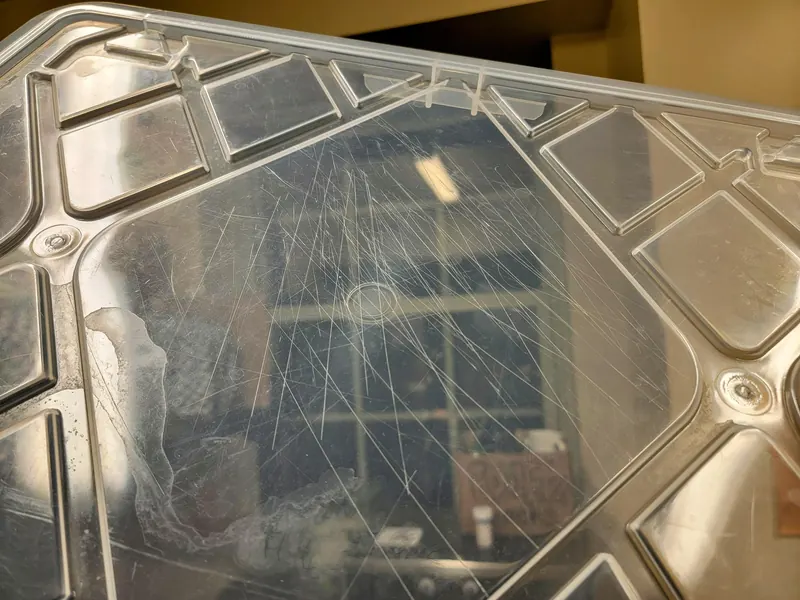
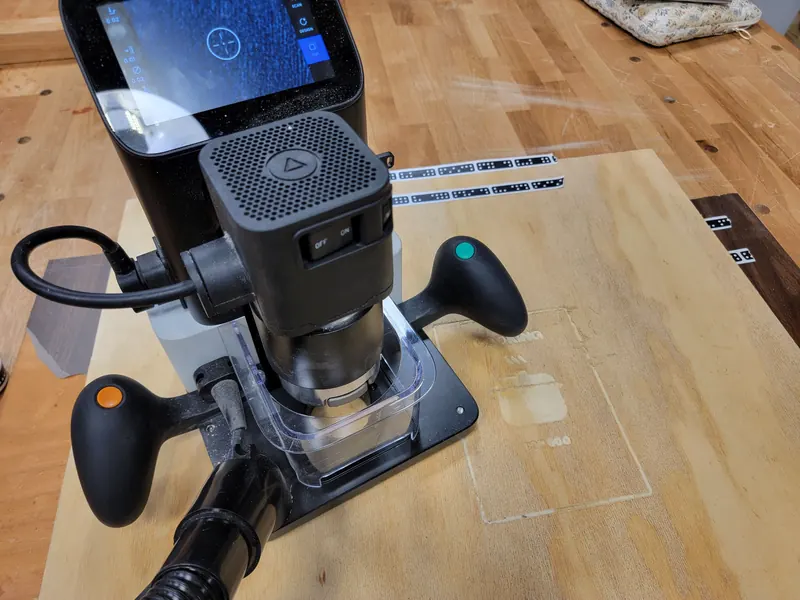
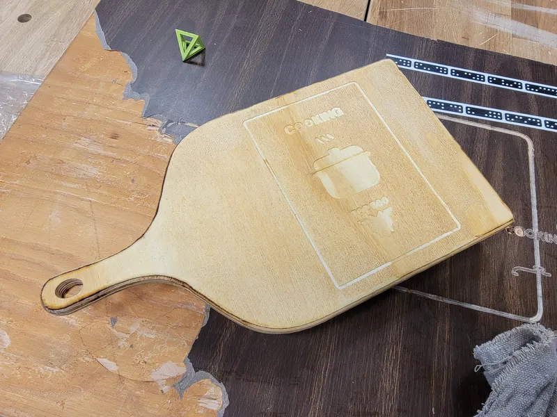
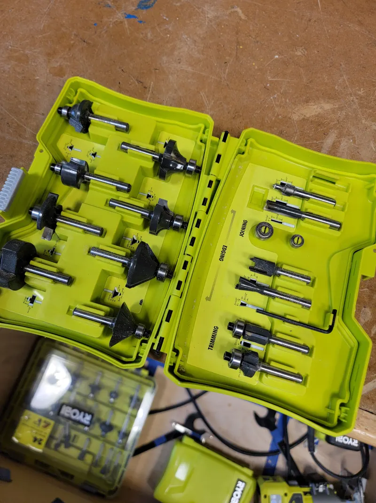
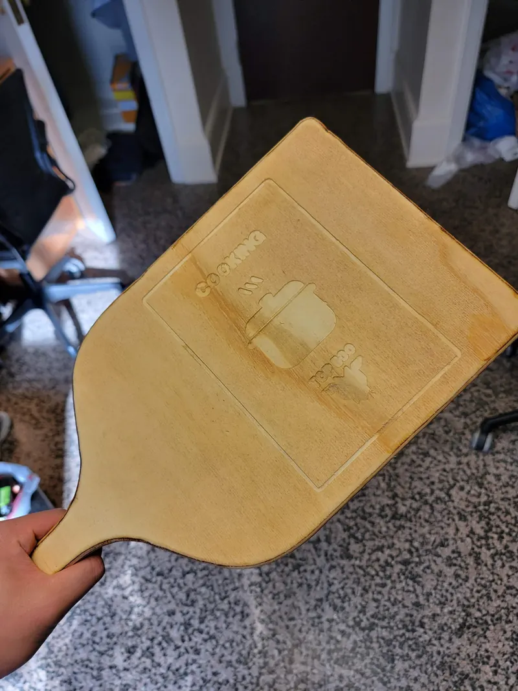

On this page
TL;DR
During the summer of 2024 at UNC, I found myself stuck on campus with a desire to cook and no cutting board. Instead of buying one like a normal person, I decided to make my own using a piece of plywood and the Shaper Origin handheld CNC machine. The process was full of trial and error, from designing the board in Adobe Illustrator to dealing with SVG file issues, but in the end, I created a custom engraved cutting board. Sure, it might have taken five hours and could've been easier to buy one, but now I have a unique, handmade piece.
Summer, 2024:
Spending your summer on campus at UNC is about as boring as it gets: most of your friends aren't on campus and all you do is grind out your classes, play video games, and hit the gym (at least, if you're me). Also, I had a lot of free time to cook. Unfortunately, I didn't have a cutting board. Of course, that didn't stop me. Conveniently, I had a lot of plastic bins, and the lids served as fantastic temporary cutting boards.
Bad idea. Every time I wielded the chef's knife with grace and skill (naturally) the blade left deep grooves in the plastic.

That summer, I probably consumed several grams of microplastics. Alas, water under the bridge. A normal person might have bought a cutting board, but fortunately for you, dear reader, I'm anything but normal.
Process
I got to work making my own. My idea was that I would use a 1/2 inch thick piece of plywood and cut out a cutting board using the Shaper Origin, a handheld CNC machine.
First, I had to design what I wanted. I knew I wanted a fun engraving. I was worried that food might get stuck on the edges of the engraving and it would be hard to clean, but that was a problem for future me.
Time to open Adobe Illustrator. The Shaper Origin uses SVG files, so I needed vectors for both the cutting board outline and the engraving. Shaper had a default design for the board, which I edited to add my own flair: “Top 500” cooking with some icons.
I gathered my materials and PPE, prepared the Shaper Origin, but ran into an issue—the SVG file wasn't being read properly. It took about an hour to fix, and honestly, I've forgotten what exactly I did, but I do remember making at least nine test versions and tweaking the SVG's HTML. That was annoying.
Finally, I started engraving. In hindsight, I wish I had made the design larger because some of the letters didn't turn out clear due to the size of the router bit, which was too large for the tiny symbols.

After engraving, I cut out the board. It wasn't perfect—very unsanded and splintery—but it was a cutting board.

Next, I used a hand router to smooth the edges, giving the board a nice curved edge all around. Usually people don't hand route such a weird shape: hand routing is much easier when doing it in a straight line. Thankfully, although the hand router was unwieldy, I still have all my fingers. Then came the sanding: I used a belt sander and a disc sander to smooth the edge and the face of the board.

After that I applied food-safe mineral oil 3 times, letting the board dry for about 20 minutes between applications. I didn't have anything to apply it with, so I stole a piece of scrap fabric from the textiles lab and used that as a cloth. My hands were pretty oily by the end of it.

That's an affiliate link, by the way. I get revenue if you use it to check out on Amazon.
I entered the makerspace at about noon and left at about 5. For my first time making a cutting board, 5 hours is pretty good. Would it have been easier, more cost effective, and more time effective to have bought a cutting board? Absolutely. But now I have a really cool cutting board. And I can finally stop making my chicken breast strips on a plastic bin lid.